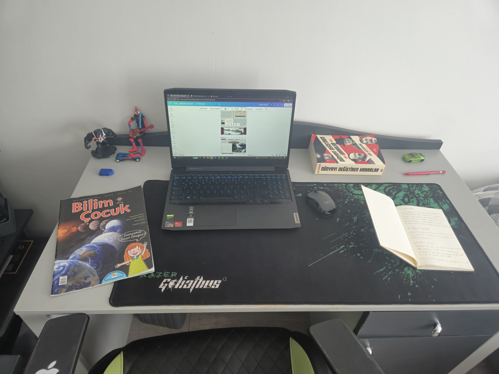

Proje Sürecinde Çalışma Masam

Dergimin tasarımı üzerinde çalışırken
.jpg)
Web site kodlamam üzerinde çalışırken

Araştırmalarım ve yazılarım üzerinde çalışırken
2008 yılında Kocaeli'de doğdum ve çocukluk yıllarımı burada geçirdim. Lise eğitimim için İstanbul ENKA Okulları'ndan burs kazandıktan sonra eğitim hayatıma burada devam ediyorum. Hem sözel hem de sayısal alanlara ilgi duyuyorum. Yazmaya olan tutkumla çeşitli şiir, paragraf ve makale yarışmalarına katıldım. Bunun yanı sıra matematik ve fizik derslerine olan ilgimle bu alanlarda yarışmalara katılarak kendimi geliştirmeye çalışıyorum.
Bu kişisel projeyi seçmemin nedeni, tarihe olan uzun süreli ilgim ve tarih hakkında daha fazla bilgi öğrenmek istemem. Araştırmalarımı yapıp, bu bilgilerimi paylaşabilecek seviyeye gelince de öğrenme hedeflerimi bir adım ileri taşıyarak, kendi yaşıtlarımdaki gençleri de eğlendirerek bilgilendirmek için bir dergi ve dergiyi paylaşabilmek için de bu internet sitesini yaptım.
Herhangi bir sorunuz varsa veya ürünün başka bir platformdan e-book halini ya da fiziksel olarak baskılı halini elde etmek istiyorsanız detaylar hakkında yandaki formdan ulaşabilirsiniz.
Dergimin tasarımı üzerinde çalışırken
Web site kodlamam üzerinde çalışırken
Araştırmalarım ve yazılarım üzerinde çalışırken